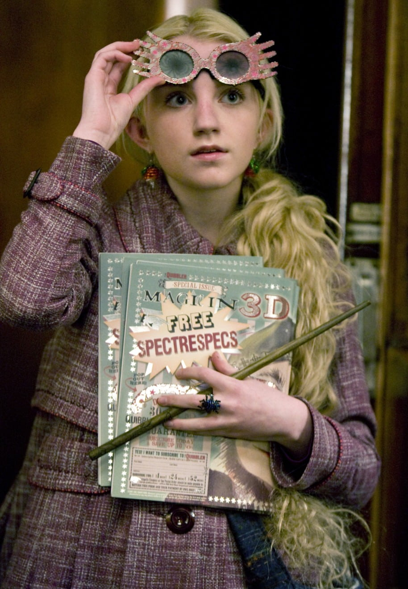
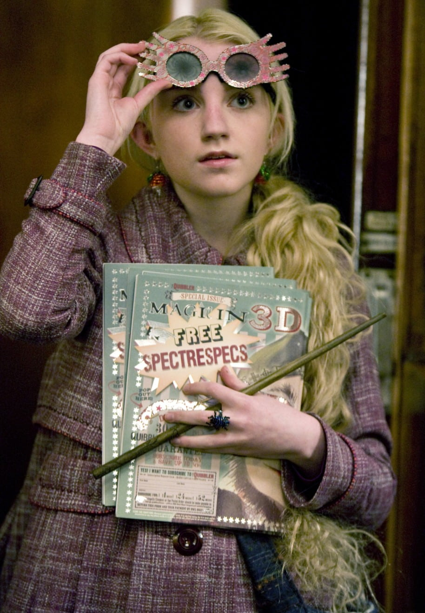

Professor[7] Luna Scamander[17][18] (née Lovegood) (b. 13 February 1981)[1] was a witch and the only child and daughter of Xenophilius and Pandora Lovegood. Her mother accidentally died while experimenting with spells when Luna was nine and thus Luna was raised by her father, editor of the magazine The Quibbler, in a rook-like house near the village of Ottery St Catchpole in Devon. Luna attended Hogwarts School of Witchcraft and Wizardry from 1992 to 1999 and was sorted into Ravenclaw House. In her fourth year, Luna joined Dumbledore's Army, an organisation taught and led by Harry Potter, of which she became an important member. She participated in the Battle of the Department of Mysteries (1996) and the Battle of the Astronomy Tower (1997), and co-led the reconstituted Dumbledore's Army when Hogwarts fell under the control of Lord Voldemort with Severus Snape as Headmaster.
Because of her father's political dissidence at the time, Luna was abducted by Death Eaters to be held ransom, and imprisoned in the dungeons of Malfoy Manor for months. She was freed by Dobby along with several other prisoners in the spring of 1998, and stayed at Shell Cottage until she returned to Hogwarts to participate in the final battle of the Second Wizarding War. After the war, Luna became a Magizoologist, discovering and classifying many magical species that had never been encountered before, and later also a Hogwarts professor teaching Field Studies, a new course dedicated to studying and interacting with magical creatures in the wilderness. She married Rolf Scamander, the grandson of Newt Scamander, a famed Magizoologist, with whom she had twin sons, Lorcan and Lysander. Luna's good friends Harry and Ginny Potter also named their daughter and third child Lily Luna Potter in honour of her.
Name
Commentary